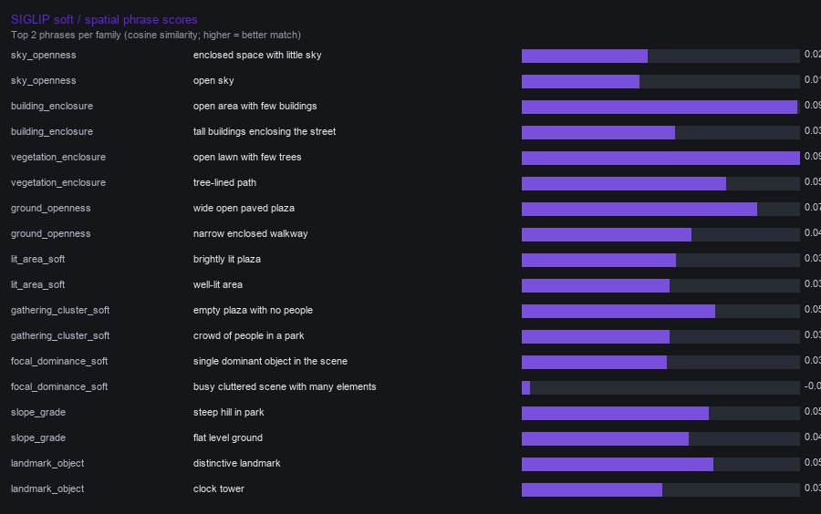
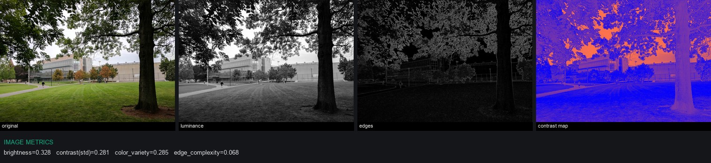

Example image 00 — ChIJQXMWnUV344kRzs9-HfLoekk / 00.jpg
seg_ok=True · brightness=0.328 · contrast=0.281 · edge=0.068




All category family scores
Objects & furnishings (objects_furnishings)
| Family | Extractors | Scores |
|---|---|---|
seating | dino | DINO hits=2 best=0.31 park bench picnic, bench bench |
play | dino | DINO hits=2 best=0.42 playground restroom, structure |
service_amenity | dino | DINO hits=2 best=0.53 trash can, trash |
bike_facilities | dino | DINO hits=0 best=0.00 |
other_amenity | dino | DINO hits=0 best=0.00 |
Vegetation (vegetation)
| Family | Extractors | Scores |
|---|---|---|
tree | dino, seg | DINO hits=13 best=0.37 tree, tree, tree SEG frac=0.489 |
canopy_shade_plant | dino, seg | DINO hits=0 best=0.00 SEG frac=0.489 |
lawn_groundcover | dino, seg | DINO hits=1 best=0.38 grass lawn meadow SEG frac=0.336 |
planting_bed | dino | DINO hits=1 best=0.25 flower |
shrub | dino | DINO hits=1 best=0.30 bush shrub hedge plant |
Circulation & access (circulation_access)
| Family | Extractors | Scores |
|---|---|---|
path_walkway | dino, seg | DINO hits=2 best=0.28 footpath, walkway footpath SEG frac=0.010 |
plaza_hardscape | dino, seg | DINO hits=4 best=0.34 plaza, paved square, plaza SEG frac=0.010 |
stairs | dino | DINO hits=2 best=0.31 stairs steps stone steps, stairs steps stone steps |
entrance_threshold | dino | DINO hits=0 best=0.00 |
crossing | dino | DINO hits=1 best=0.27 crosswalk |
Boundaries & edges (boundaries_edges)
| Family | Extractors | Scores |
|---|---|---|
fence | dino | DINO hits=0 best=0.00 |
wall | dino | DINO hits=0 best=0.00 |
gate | dino | DINO hits=0 best=0.00 |
railing | dino | DINO hits=2 best=0.31 railing metal, railing metal |
hedge | dino | DINO hits=0 best=0.00 |
Facade & built form (facade_built_form)
| Family | Extractors | Scores |
|---|---|---|
building_mass | seg, dino | DINO hits=2 best=0.38 building large building building front, building large building building facade building front SEG frac=0.089 |
facade_frontage | dino, seg | DINO hits=0 best=0.00 SEG frac=0.089 |
opening | dino | DINO hits=1 best=0.25 window |
canopy_awning | dino | DINO hits=2 best=0.27 canopy, canopyhang |
Light (light)
| Family | Extractors | Scores |
|---|---|---|
light_fixture | dino | DINO hits=3 best=0.31 lamp post light pole, park light, light pole |
lit_area_soft | siglip | SIGLIP brightly lit plaza (0.036) |
brightness_level | metric | METRIC mean_luminance=0.328 |
Materiality & surface (materiality_surface)
| Family | Extractors | Scores |
|---|---|---|
paving_type | dino, seg | DINO hits=1 best=0.26 asphalt path SEG frac=0.010 |
soft_ground | dino, seg | DINO hits=1 best=0.39 mulch unpaved ground SEG frac=0.336 |
hard_vertical | dino | DINO hits=4 best=0.35 metal fence, metal fence, metal fence |
water_surface | seg, dino | DINO hits=0 best=0.00 SEG frac=0.000 |
Water & terrain (water_terrain)
| Family | Extractors | Scores |
|---|---|---|
fountain | dino | DINO hits=0 best=0.00 |
water_body | dino, seg | DINO hits=0 best=0.00 SEG frac=0.000 |
slope_grade | siglip, metric | SIGLIP steep hill in park (0.051) METRIC ground_height_bias=0.819 |
rock_landform | dino | DINO hits=0 best=0.00 |
Social presence (social_presence)
| Family | Extractors | Scores |
|---|---|---|
people | dino | DINO hits=8 best=0.64 person, person, person |
bicycle | dino | DINO hits=4 best=0.41 bicycle picnic, bicycle bike parked bicycle, bicycle bike parked bicycle |
gathering_cluster_soft | siglip | SIGLIP empty plaza with no people (0.054) |
Spatial structure (spatial_structure)
| Family | Extractors | Scores |
|---|---|---|
sky_openness | seg, siglip | SEG frac=0.075 SIGLIP enclosed space with little sky (0.023) |
building_enclosure | seg, siglip | SEG frac=0.089 SIGLIP open area with few buildings (0.092) |
vegetation_enclosure | seg, siglip | SEG frac=0.825 SIGLIP open lawn with few trees (0.093) |
ground_openness | seg, siglip | SEG frac=0.010 SIGLIP wide open paved plaza (0.073) |
Composition & contrast (composition_contrast)
| Family | Extractors | Scores |
|---|---|---|
luminance_contrast | metric | METRIC luminance_std=0.281 |
color_variety | metric | METRIC channel_std_mean=0.285 |
edge_complexity | metric | METRIC gradient_edge_density=0.068 |
focal_dominance_soft | siglip, metric | SIGLIP single dominant object in the scene (0.032) METRIC gradient_edge_density=0.068 |
Wayfinding & information (wayfinding_information)
| Family | Extractors | Scores |
|---|---|---|
sign | dino | DINO hits=3 best=0.37 street sign, street sign, street sign |
landmark_object | dino, siglip | DINO hits=1 best=0.31 clock tower SIGLIP distinctive landmark (0.053) |
map_board | dino | DINO hits=2 best=0.33 information board, information board |